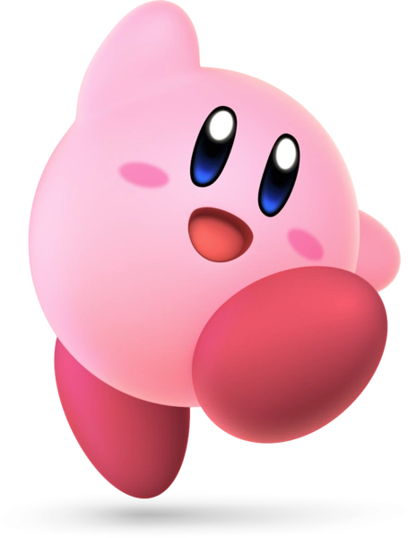
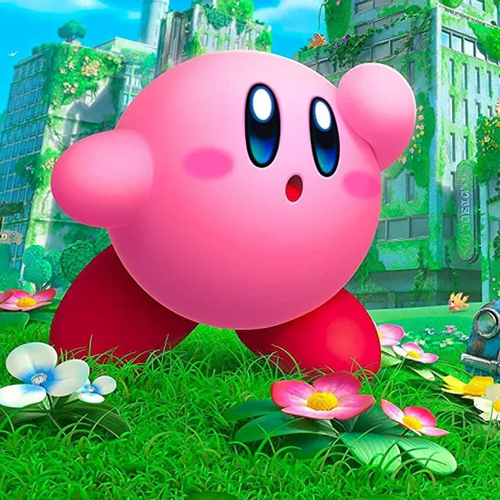
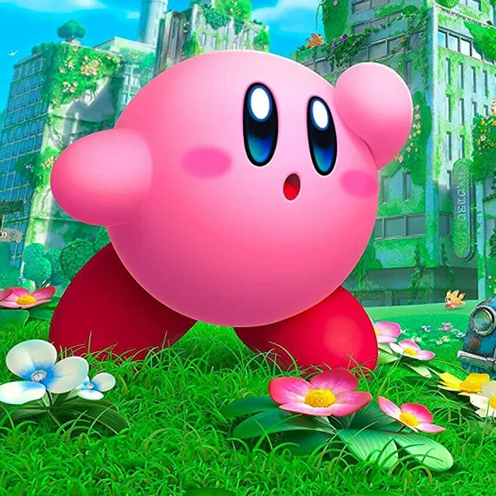
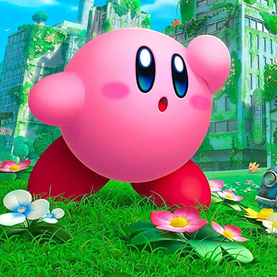

Home
Kirby Verse
Sobre
Welcome to Kirby World
Kirby é uma bola rosa antropomorfizada com habilidades de sugar oponentes e incorporar o poder deles, cuspi-los ou engoli-los.
 

Home
Kirby Verse
Sobre
Kirby é uma bola rosa antropomorfizada com habilidades de sugar oponentes e incorporar o poder deles, cuspi-los ou engoli-los.
